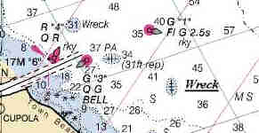

Link Index
MWDC
Home Page
Shipwrecks Page
Albert Galatin
Alice M. Colburn
Alice M. Lawrence
Ardandhu
Barge and Crane
California
Charles S. Haight
Chelsea
Chester Poling
City of Salisbury
Corvan
Dixie Sword
Edward Rich
French Van Gilder
Henry Endicott
Herbert
Herman Winter
Hilda Garston
HMCS St. Francis
James Longstreet
John Dwight
Kershaw
Kiowa
Lackawanna
Lunet
Mars
Pemberton
Pendleton
Pinthis
Port Hunter
Pottstown
Romance
Seaconnet
Trojan
USS Grouse
USS New Hampshire
USS Triana
USS Yankee
USS YSD
Vineyard Sound
Lightship
|
Description: Schooner barge; Wood
Dimensions: length - 195 ft. width - 35 ft. depth - 19 ft. 9 in.
Tonnage: gross - 974 other -
Propulsion: Towed
Machinery:
Cargo: Coal
The Shipwreck
Date Sunk: November 17, 1944
Cause: Foundered
Location: Sandwich, Cape Cod Canal, northeast of the Scusset breakwater.
Coordinates: Latitude, 41o - 47.1'N Longitude,70o - 37.6'W
Loran: 13997.8 and 44033.7
Monday afternoon, November 16th, the tug Wathen, of the Red Star Line, anchored the schooner barge Pottstown near the eastern entrance of the Cape Cod Canal. A thick fog had set in and Wathen's Captain thought it prudent to wait until daybreak before continuing his voyage. Earlier Wathen had anchored the schooner barge Glenside and another barge. As visibility decreased Wathen proceeded back through the canal with one of the other barges, tying off at the State Pier, Buzzard's Bay, for the night.
Early the next morning a strong northeaster began to blow. As the storm reached 8 on the Beaufort Scale, heavy seas tore loose Pottstown's hawsepipe through which ran the anchor chain. The hawsepipe is "a cylindrical or elliptical pipe made of cast steel or iron, situated near the stem", which protects a vessels hull timbers from the abrasive action of the chain. Now with that protection gone, the vessel's anchor chain began to saw down through the hull toward the waterline. Pottstown's skipper sent up distress rockets and signaled the Sandwich Coast Guard.
Notified of the situation, Wathen raced back through the canal with the plan of beaching Pottstown. As the tug neared the entrance of the canal a heavy towline was made ready on the stern. But just as Wathen cleared the lee of Scusset breakwater a wave swept the line overboard fouling the tug's propeller. Now Wathen was the vessel in distress.
Meanwhile a small Coast Guard vessel rescued Pottstown's crew just as the barge sank from beneath them. Attempts to save the tug failed when the much smaller Coast Guard vessel's towlines parted. At the mercy of the storm Wathen cleared the breakwater only to be driven ashore off Sandwich Town Beach. Her crew was removed by breeches buoy. Glenside reportedly drifted ashore at Scusset Beach. Both vessels were a total loss.
Back to Top
Dive Site Conditions
Depth in feet: maximum - 60 minimum -
Visibility in feet: average -
Pottstown's shattered remains lie in about 60 feet of water on a sandy bottom. The hull is really flattened, only the timbers show above the sand, giving her a low profile. Here and there coal can be found, but no big piles. The remains of machinery can be seen at one end, possibly the windless or donkey engine.
Although the vessel's registry information indicates she was constructed using galvanized iron fastenings, bronze spikes and nails were reportedly recovered by those who first explored the wreck.
Click on the image to go to the MapTech Map Server,
for additional navigation information.

Back to Top
Historical Background
Constructed: year - 1917 where - Baltimore, Maryland.
builder - Coastwise S.B. Co.
Construction details: 1 Deck; originally 3 masts, dismasted for use as a barge; Oak, Chestnut and Pine construction; Galvanized Iron Fastenings
Crew: 5 Master:
Owners: Sound Chartering Corp
Home or Hailing Port: New York, N.Y
Former Name(s) and date(s):
Official number: 215678 Country: U.S.A.
Other Comments: Morris lists Pottstown as owned by the Reading Company, Twelfth and Market Streets, Philadelphia, PA; Luther lists the barge owned by H.P. Dikes Company, PA.
Back to Top
Salvage
No salvage was attempted. It being wartime there were insufficient divers available to do the job. Close enough to the eastern entrance of the strategic Cape Cod Canal, to pose a hazard to navigation, Pottstown was slated for removal. Early in 1945, Army Engineers rigged the barge's deck with dynamite. The resulting explosion lifted a column of water 200 feet in the air demolishing the upper deck superstructure, and scattering her cargo.
Back to Top
Sources:
Dave Daly, MetroWest Dive Club
Fishable Wrecks and Rockpiles; Coleman & Soares, 1989
Historical Maritime Group of New England; September 1, 1989
International Maritime Dictionary; De Kerchove, 1983
MapTech Mapserver
New England Shipwrecks; Luther, 1965
Schooners and Schooner Barges; Morris, 1984
Ten Years at Ten Fathoms; Luther
The Fisherman, magazine; March 1989
The Record, "American Lloyds", American Bureau of Shipping; 1944
Wrecks Below; Luther, 1958
Back to Top
These files are under construction. Any information, specifically dive site related, would be greatfully appreciated.
Send comments to: Chris Hugo
Copyright © 2000 by Christopher C. Hugo
Massachusetts Board of Underwater Archaeological Resources
All Rights Reserved
|